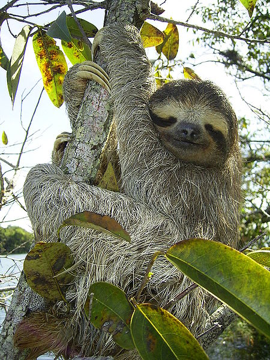
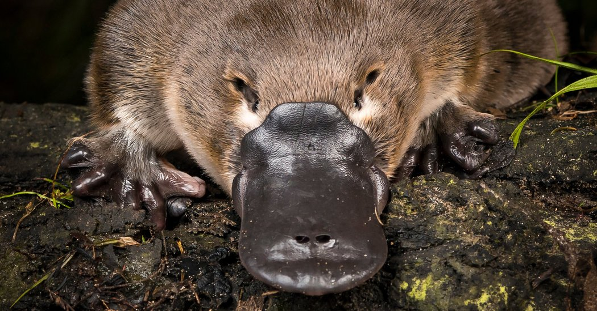

Main
main content
Sloth
Sloths are arboreal mammals noted for slowness of movement and for spending most of their lives hanging upside down in the trees of the tropical rainforests of South America and Central America. The six species are in two families: two-toed sloths and three-toed sloths. In spite of this traditional naming, all sloths actually have three toes. The two-toed sloths have two digits, or fingers, on each forelimb.
The sloth is so named because of its very low metabolism and deliberate movements, sloth being related to the word slow. This is an evolutionary adaptation to their low-energy diet of leaves, and to avoid detection by predatory hawks and cats who hunt by sight.[3] Sloths are almost helpless on the ground, but are able to swim. The grooved hairs of the sloth's shaggy coat is a host to symbiotic green algae which helps the sloth camouflage itself in the trees, and provides nutrients to the sloth. The algae in turn nourishes sloth moths, some species of which exist solely on sloths.
Platypus
The platypus (Ornithorhynchus anatinus), sometimes referred to as the duck-billed platypus, is a semiaquatic egg-laying mammal endemic to eastern Australia, including Tasmania. Together with the four species of echidna, it is one of the five extant species of monotremes, the only mammals that lay eggs instead of giving birth to live young. The animal is the sole living representative of its family (Ornithorhynchidae) and genus (Ornithorhynchus), though a number of related species appear in the fossil record. The first scientists to examine a preserved platypus body (in 1799)[3] judged it a fake, made of several animals sewn together.
The unusual appearance of this egg-laying, duck-billed, beaver-tailed, otter-footed mammal baffled European naturalists when they first encountered it, with some considering it an elaborate hoax. It is one of the few species of venomous mammals: the male platypus has a spur on the hind foot that delivers a venom capable of causing severe pain to humans. The unique features of the platypus make it an important subject in the study of evolutionary biology and a recognisable and iconic symbol of Australia; it has appeared as a mascot at national events and features on the reverse of the Australian twenty-cent coin. The platypus is the animal emblem of the state of New South Wales.[5]